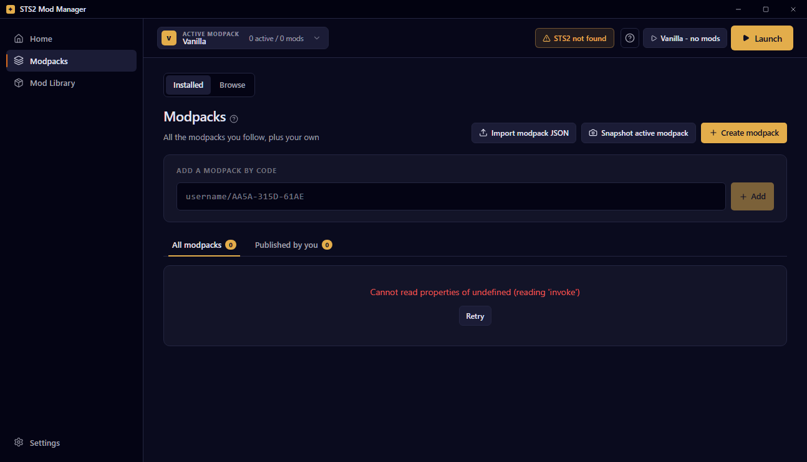
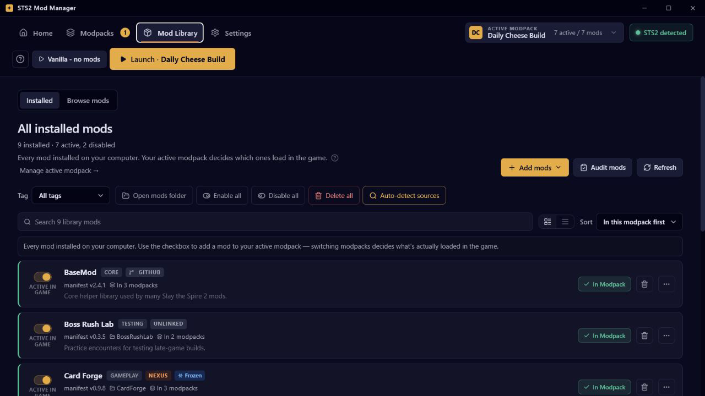

Follow, share, and re-share
Install a pack by code or link, keep the same code when a curator updates it, and browse public packs from inside the app.
Version 1.8.3 for Windows, macOS, and Linux
STS2 Mod Manager helps you follow friends' modpacks, launch safely, track exact mod sources, and keep backups close when a run setup goes sideways.
App downloads are hosted on GitHub Releases. Nexus Mods and Steam Workshop are supported as mod source integrations, not manager distribution channels.

The manager is designed for the messy middle: friend packs, pinned versions, update drift, downloaded archives, and Steam-owned Workshop items living in the same library without losing their provenance or confusing Workshop-provided dependencies for missing local files.
Install a pack by code or link, keep the same code when a curator updates it, and browse public packs from inside the app.
Repair walks release history and chooses the newest mod build compatible with your current Slay the Spire 2 version, while launch checks account for active Workshop dependencies.
The Mod Library separates installed files from active modpack membership, with source labels and row actions where you need them.
Automatic backups, restore prompts, and recovery-minded confirmations help you get back to a known-good setup.
Pinned mods keep both their version and enabled/disabled state, even when a followed modpack changes later.
The app is open source, built with Tauri 2, React, TypeScript, and Rust, and releases are built in public.
Fresh screenshots use fake sample data and the current topbar interface. The old sidebar layout and changelog/what's-new banner are not shown.


STS2 Mod Manager can work with several mod source types while keeping ownership clear. This is about managing mods; the manager app itself is still downloaded from GitHub Releases.
Install compatible release assets, update linked mods, and include redistributable release assets in shared modpacks.
Link mod pages, audit known sources, open the Files page in your browser, and let the downloads watcher install the saved archive.
Subscribed Workshop items appear in the Library and can be referenced by item ID. Steam keeps ownership of the files.
Drag and drop `.zip`, `.7z`, or `.rar` archives when a mod has no source link the app can automate.
From install to launch, the happy path is short.